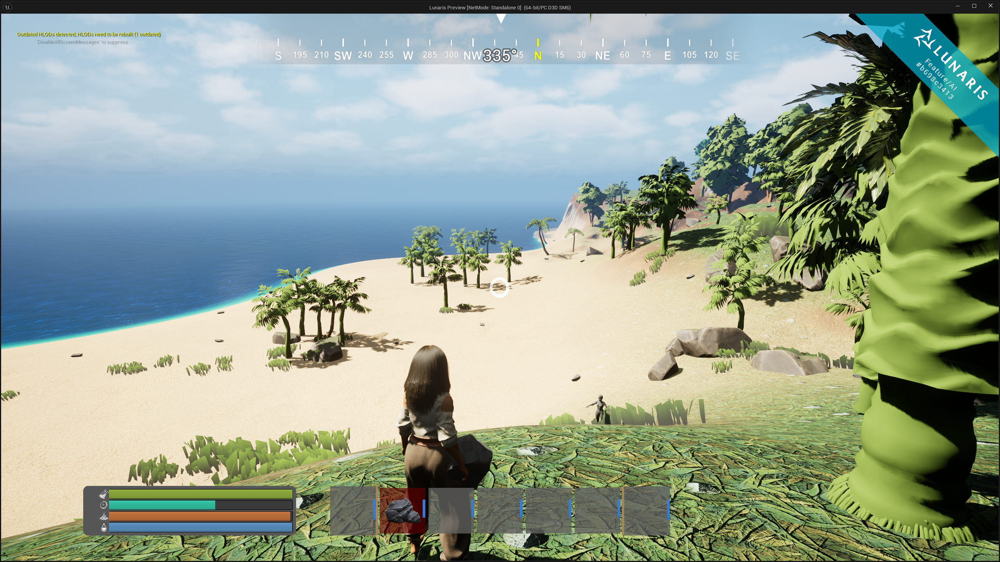
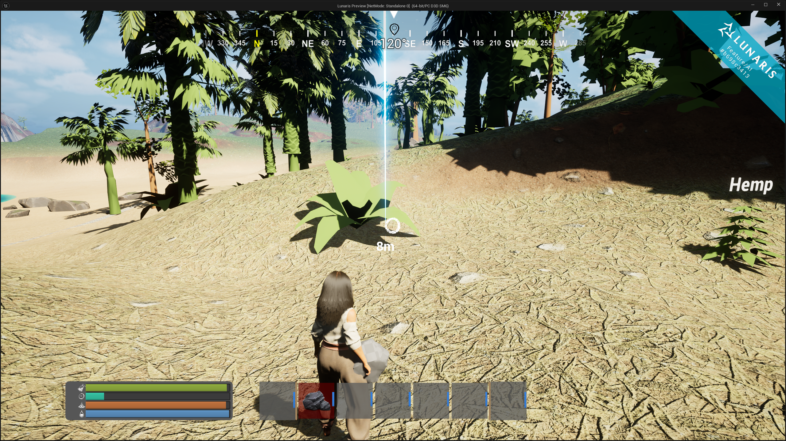
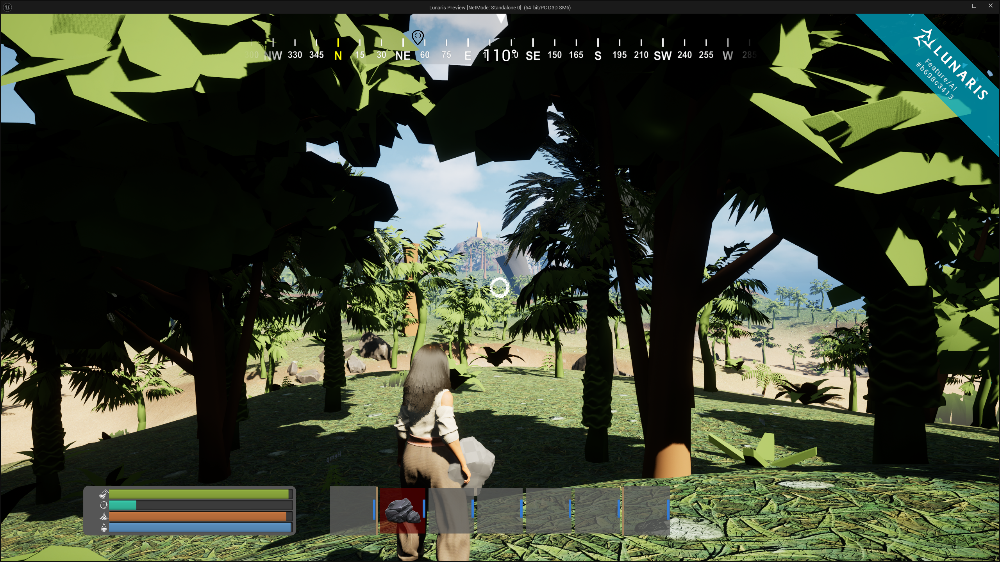
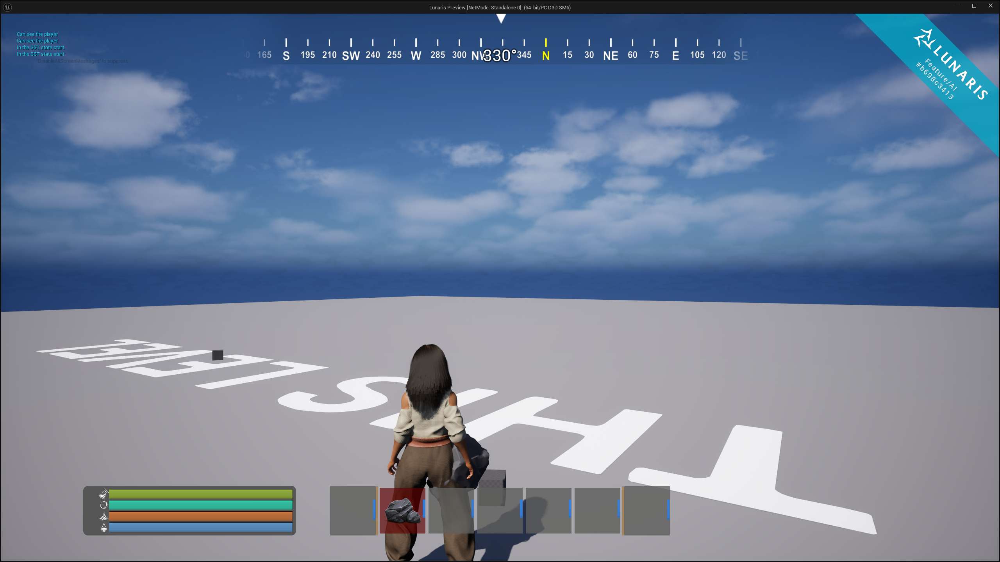
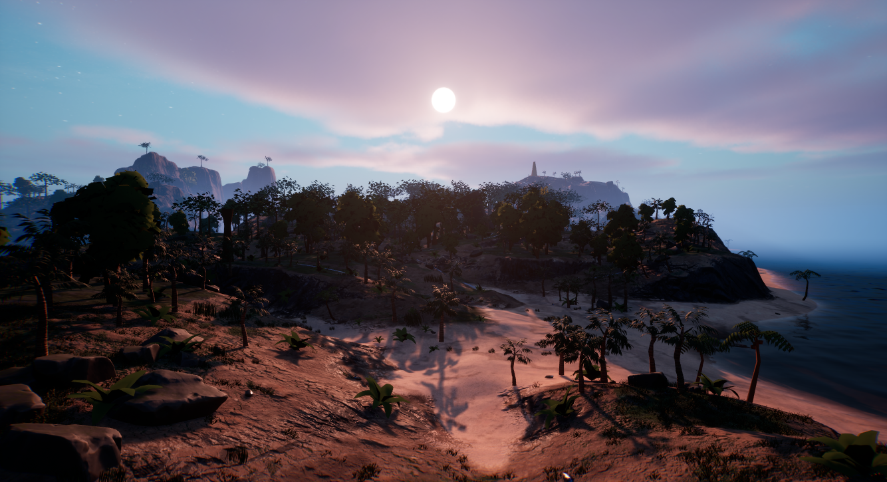
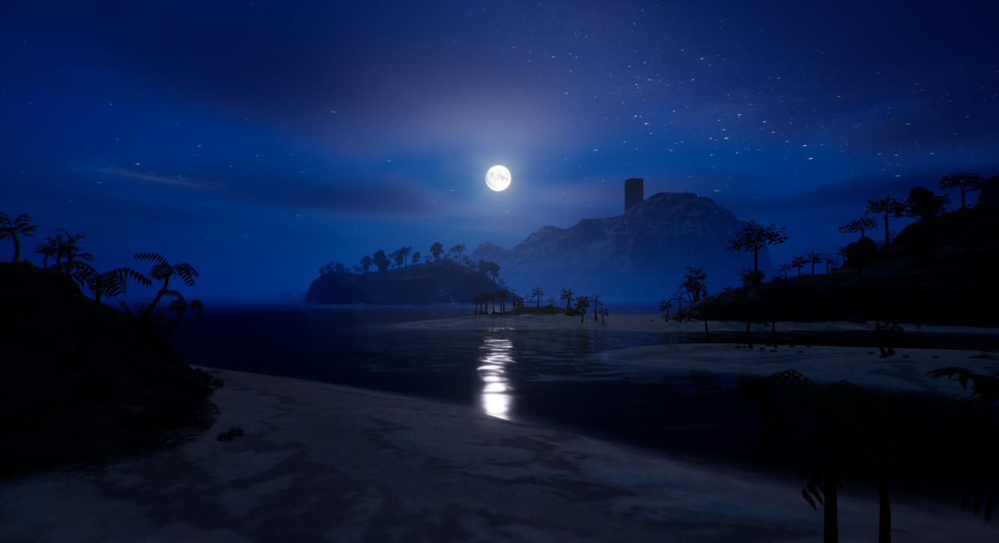
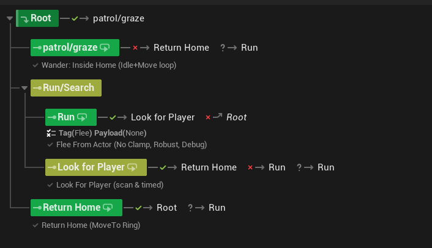

Project Lunaris
A project I'm currently developing for Segritude games, Using Blueprints and C++
I’m working as C++ programmer on an Unreal Engine 5 survival RPG inspired by Rust and Valheim. I work across UE5 C++ and Blueprints, owning multiplayer/replication and core gameplay systems (AI, party system, world map & waypoints/compass, interaction, and UI/UX). My focus is a modular, data-driven architecture with safe pointers (TObjectPtr/TWeakObjectPtr), const-correctness, and early-out guards—plus ongoing profiling and optimizations to keep Gameplay smooth and the codebase scalable.






This AI Chicken uses Unreal Engine 5’s StateTree to drive clean, data-driven behavior switching (idle, wander, flee, death) while remaining fully server-authoritative and multiplayer-safe. The character owns its health and leash data, while the StateTree reacts purely to replicated state and gameplay events.

StateTree overview — Graze/Patrol → Run → LookforPlayer → Returnhome

In-game behavior — StateTree reacting to threats, Player, and Home Area constraints
void AChicken::SetLeash_Implementation(
const FVector& Center,
float Radius,
AActor* SpawnerOwner)
{
if (!HasAuthority())
return;
HomeLocation = Center;
WanderRadius = Radius;
bLeashActive = true;
OwningSpawner = SpawnerOwner;
if (StateTreeComponent)
{
StateTreeComponent->SendStateTreeEvent(
FStateTreeEvent(
FGameplayTag::RequestGameplayTag(
FName("AI.Event.SetLeash"))));
}
GetWorldTimerManager().SetTimerForNextTick([this]()
{
if (StateTreeComponent && !StateTreeComponent->IsRunning())
{
StateTreeComponent->StartLogic();
}
});
}
The map/compass is fully modular: attach a UMapMarkerComponent to any Actor and it auto-registers on the Map and Compass.
Designers can tweak the icon, size, color, and visibility directly in the editor—no hardcoded links. Below is the waypoint add flow,
which converts a screen click into a world-space marker and safely spawns it.
void UWorldMapUI::AddWaypoint(const FVector2D ScreenPosition) const
{
const UMapSubsystem* MapSubsystem = UMapSubsystem::Get(this);
if (!IsValid(MapSubsystem) || MapSubsystem->RegisteredMarkers.Num() >= 3)
{
LOG_WARN(MapSystemLog, "Cannot add more than 3 waypoints. Remove one first.");
return;
}
if (!MapTexture)
{
LOG_ERROR(MapSystemLog, "MapTexture border is null!");
return;
}
const FGeometry Geo = MapTexture->GetCachedGeometry();
const FVector2D LocalPt = Geo.AbsoluteToLocal(ScreenPosition);
const FVector2D Size = Geo.GetLocalSize();
if (LocalPt.X < 0 || LocalPt.X > Size.X || LocalPt.Y < 0 || LocalPt.Y > Size.Y)
return;
const ULandSubsystem* LandSubsystem = ULandSubsystem::Get(this);
if (!IsValid(LandSubsystem)) return;
FVector WorldPos = LandSubsystem->TextureToWorld(LocalPt, Size, 0.f);
if (UMapSubsystem* MSS = UMapSubsystem::Get(this); IsValid(MSS))
{
WorldPos = MSS->ProjectToGround(WorldPos, 100000.f, 20.f);
}
if (IsValid(MarkerClass))
{
FActorSpawnParameters Params;
Params.Owner = GetOwningPlayer();
if (GetWorld()->SpawnActor<AActor>(MarkerClass, WorldPos, FRotator::ZeroRotator, Params))
{
LOG_INFO(MapSystemLog, "Spawned Marker at %s", *WorldPos.ToString());
}
else
{
LOG_ERROR(MapSystemLog, "Failed to spawn Marker actor!");
}
}
}UMapSubsystem. If invalid or at the 3-waypoint cap, exit early to keep UI readable and avoid spam.GetCachedGeometry() + AbsoluteToLocal to map the click into the map widget’s local coords, then bounds-check.ULandSubsystem::TextureToWorld so UI stays dumb; all terrain/UV mapping logic lives in the land subsystem.UMapSubsystem::ProjectToGround snaps to terrain with a bounded trace (depth/step), so markers never float.MarkerClass at the resolved position and set Owner to the local player for clean lifetime/relevance.UMapMarkerComponent auto-registers to Map/Compass. Icon, size, color, and visibility are editable per instance.const and cheap; invalid state bails immediately, keeping frame time predictable.IsValid(...) checks; store UObjects as TObjectPtr<> in owners, and external actor refs as TWeakObjectPtr<> to avoid dangling refs.ULandSubsystem handles mapping, UMapSubsystem manages registration and projection.UMapMarkerComponent to any actor you want visible.BeginPlay().Project Lunaris is being developed under Segritude LTD, an independent game studio focused on building scalable multiplayer systems and immersive gameplay experiences using Unreal Engine 5.
Got any Suggestions or queries? Reach out or check out the game on Play Store.
{kind=link}
{kind=link}
{kind=link}
{kind=link}
{kind=link}
{kind=link}